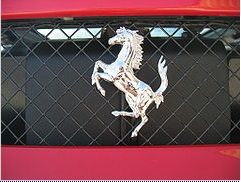

Фотографии

|

Ferrari S.p.A. (кратко: Ferrari — русск. «Феррари») — итальянская компания,
выпускающая спортивные автомобили, базирующаяся в Маранелло. Основана в 1928 году Энцо Феррари как «Скудерия Феррари»
(итал. Scuderia Ferrari), компания спонсировала гонщиков и производила гоночные машины до 1947 года. С 1947 года начала
выпуск «уличных» (англ. street-legal) спортивных автомобилей под маркой «Ferrari S.p.A.». На протяжении всей своей истории,
компания участвует в различных гонках, особенно в Формуле-1, где она имеет наибольший успех. Эмблема «Феррари» — гарцующий
жеребец на жёлтом фоне. Традиционный цвет автомобилей — красный.
Организация
Гоночная конюшня, именуемая «Скудерия Феррари» (Scuderia Ferrari) основана Энцо Феррари в 1929 году. Начала производить
транспортные средства в 1947 году.
В настоящее время компания Ferrari принадлежит группе Fiat. Председатель совета директоров и президент компании —
Лука ди Монтедземоло (Luca di Montezemolo). Головной офис и производство находится в итальянском городе Маранелло,
вблизи Модены.
Акционеры:93,4 % акций Ferrari принадлежит концерну Fiat.
Деятельность
Компания выпускает гоночные и спортивные автомобили.
В 2008 году компания произвела 6662 автомобилей (на 1,2 % больше, чем в 2007 году). Численность персонала компании на
конец 2008 года составила 3017 человек (на 3,1 % больше, чем в 2007 году). Оборот в 2008 году составил 1,921 млрд евро
(на 15,2 % больше, чем в 2007 году).
Гоночное подразделение компании «Скудерия Феррари» (итал. Scuderia Ferrari) выступает в гонках Формула 1 и является самой
успешной за всю историю гонок.
Эмблема
Эмблема Феррари, гарцующий жеребец на жёлтом фоне, впервые появилась на печатных материалах и официальных документах
компании в 1929 году. Однако в то время «Гарцующий жеребец» не изображался на машинах, так как они принадлежали Alfa Romeo
и имели собственную эмблему в виде клеверного листа на белом фоне треугольной формы.

|

На главную
|